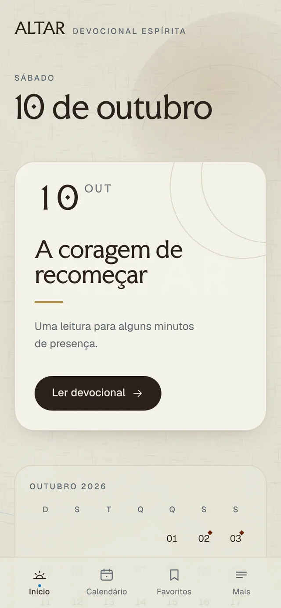
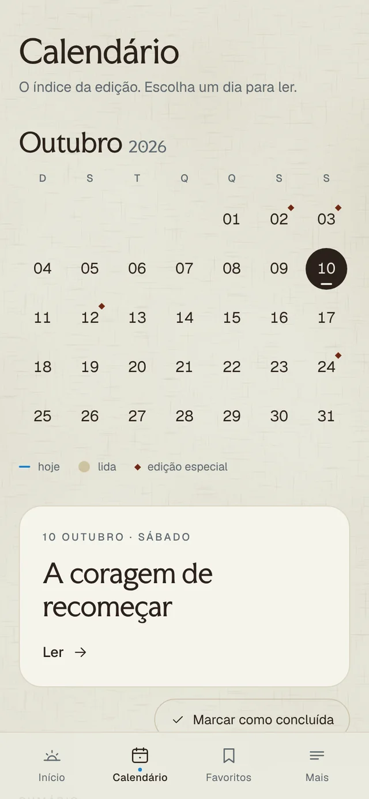

EstratégiaStrategy
Encontrar o problema real antes de escolher a solução.Finding the real problem before choosing a solution.
Marcus Valério
Estratégia, direção criativa e sistemas, tirados do papel. Conecto marketing, design e tecnologia para criar produtos que resolvem problemas reais.Strategy, creative direction and systems, taken off the page. I connect marketing, design and technology to build products that solve real problems.
SobreAbout
Sou movido por ideias e pelo momento em que elas viram algo real. Conecto estratégia, marketing, design e tecnologia para criar produtos e sistemas que resolvem problemas reais.I'm a creative thinker who likes the moment an idea becomes something real. I connect strategy, marketing, design and technology to build products and systems that solve real problems.
AgoraNow Estudo logística, o que molda minha forma de pensar processos, operações e sistemas.I study logistics, which shapes how I think about processes, operations and systems.
Áreas de interesseAreas of interest
Encontrar o problema real antes de escolher a solução.Finding the real problem before choosing a solution.
Dar a uma ideia ponto de vista, voz e linguagem visual.Giving an idea a point of view, a voice and a visual language.
Posicionamento e narrativa: como as pessoas chegam e por que ficam.Positioning and narrative: how people find something, and why they stay.
Ferramentas moldadas por fluxos reais, da operação ao uso cotidiano.Tools shaped around real workflows, from operations to everyday use.
Projetos em destaqueSelected work
Cinco projetos entre operação, mobilidade e cuidado. Os filmes mostram cada sistema funcionando.Five projects across operations, mobility and care. The films show each system working.
01 · Gestão de barbeariasBarbershop operations
Sistema operacional para barbearias: agenda, atendimento, caixa, comissão e estoque conectados, no balcão e no celular de cada barbeiro.An operating system for barbershops: agenda, service, cash, commission and stock connected, at the counter and on every barber's phone.
02 · Layout logísticoLogistics layout
Planejamento 2D de layouts logísticos e desenho de fluxos de processo, com métricas de ocupação, capacidade e gargalo calculadas enquanto você desenha.2D logistics layout planning and process flow design, with occupancy, capacity and bottleneck metrics calculated as you draw.
03 · Mobilidade urbanaUrban mobility
Mobilidade urbana no Rio de Janeiro: GPS de ônibus e BRT cruzado com dados de chuva e clima.Urban mobility in Rio de Janeiro: bus and BRT GPS read alongside rainfall and weather data.
04 · Operações empresariaisBusiness operations
ERP que reúne as principais operações de uma empresa em um único sistema.Enterprise resource planning that brings core business operations into one system.
05 · PWA devocionalDevotional PWA
PWA devocional espírita pensado para o celular, para alguns minutos diários de leitura e reflexão. Funciona offline e sem login.A Spiritist devotional PWA designed for the phone, for a few daily minutes of reading and reflection. Works offline, no login.


AbordagemApproach
Questionar o briefing antes de construir a resposta.Question the brief before building the answer.
Estratégia, design, logística e código se informam.Strategy, design, logistics and code inform each other.
Transformar conceitos em produtos e sistemas que funcionam, e depois refinar.Turn concepts into working products and systems, then refine.
FerramentasTools
ContatoContact